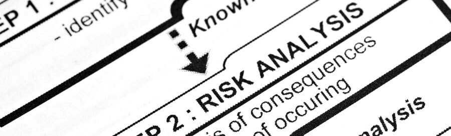

4 A risk log or register
An important element of the planning stage is to prepare a risk log or register and put in measures to minimise risk. A risk assessment needs to be performed for each aspect of the project, and these are kept together in a risk log.
For example, organisations can use a RAID log for their projects:
- Risks
events that will have an adverse effect on the project. - Assumptions
factors that are assumed to be in place. - Issues
something that is going wrong on the project and needs managing. - Dependencies
events or work that are dependent on the result of the project, or things on which the project will be dependent.
Risks can be defined in many ways – eg financial risk when investing or borrowing money; reputation when making decisions that affect the organisation’s image and good name; weather or other external influences; health and safety.
According to the Health and Safety Executive, there are five main steps to risk assessment. Many organisations use these as guidelines when designing and implementing their own risk assessments:
- Identify the hazards.
- Decide who might be harmed, and how.
- Evaluate the risks and decide on precautions.
- Record findings and implement them.
- Review the assessment and update as necessary.
These risk assessment guidelines can be modified to apply to any type of risk as they help everyone to see and understand the potential hazards, and to take steps to reduce the chance of harm by having control measures in place.
A risk management log could include columns such as:
- risk impact – high, medium or low
- probability of occurrence – high, medium or low
- risk descriptions
- project impact – eg timescales or resources that may be affected
- risk area – eg budget, resources or schedule
- symptoms – eg human resources are not fully decided when a project is about to start
- triggers – eg 24 hours before bad weather is inevitable, contingency plans to cancel will come into effect
- risk response – eg mitigation
- response strategy – eg allocate extra resources, reschedule or cancel
- contingency plan – eg bring in qualified agency staff to cover short term.